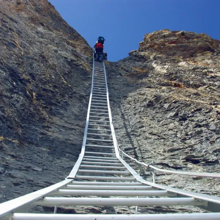
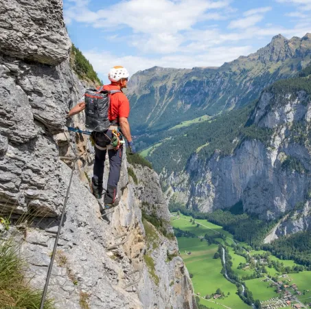

Welcome to The Iron Path
A via ferrata is a protected climbing/scrambling route that uses steel cables, ladders, and other fixed equipment to assist climbers. This website is dedicated to providing information about via ferratas, from the gear you'll need to a personal anecdote about my experience with them. Whether you're a seasoned outdoorsperson or a beginner looking to explore this exciting activity, you'll find resources here to help you prepare for your next adventure.


Learn More

Gear Needed
Discover the gear required for a safe and enjoyable via ferrata experience.
↪︎
Difficulty Ratings
Learn about the difficulty ratings used to classify via ferrata routes.
↪︎
Locations
Find popular via ferrata locations around the world.
↪︎
Personal Anecdote
Read about my first via ferrata experience.
↪︎